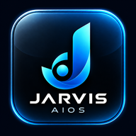

Dale un lugar a lo importante.
Ideas, compromisos, notas y recordatorios para retomar el trabajo sin depender de tenerlo todo en la cabeza.
Memoria privada y revisable
JARVIS AIOSConoce JarvisUN ASISTENTE REAL PARA TU VIDA
Habla con Jarvis. Conecta lo que sabes con lo que necesitas hacer.
Un segundo cerebro que reúne tu contexto, recuerda lo importante y te ayuda a convertir una intención en un resultado.
Vista estática. Puedes explorar todo el contenido.
01 / UNA INTENCIÓN
No necesitas memorizar comandos. Explica qué quieres resolver.
Por voz o por escrito, Jarvis interpreta tu solicitud y te ayuda a darle forma. Si hace falta un dato para avanzar, lo aclara contigo.
“Jarvis, revisa las notas de esta reunión y prepara los próximos pasos”.Ejemplo de uso. Esta página no escucha ni ejecuta tareas.
02 / TU SEGUNDO CEREBRO
Tus proyectos tienen una historia. No deberías contarla de nuevo cada vez.
Jarvis conecta documentos, decisiones, preferencias y pendientes autorizados. Puedes consultar y corregir lo que recuerda, y revisar las fuentes que respaldan una respuesta.
03 / UN RESULTADO
Un documento, una búsqueda, una tarea organizada o una acción en tu computador.
Jarvis usa las herramientas que hayas conectado y muestra el estado del trabajo. Las acciones sensibles pasan por tu confirmación.
Qué se hizo, qué falta y qué necesita tu decisión.
MENOS INFORMACIÓN DISPERSA. MÁS CONTINUIDAD.
El modelo aporta inteligencia. El cerebro reúne tu conocimiento, tus métodos y tus herramientas para aplicarla con contexto.
El resultado se revisa.
El control sigue siendo tuyo.
CAPACIDADES
El alcance depende de las herramientas conectadas y los permisos que decidas conceder.
Ideas, compromisos, notas y recordatorios para retomar el trabajo sin depender de tenerlo todo en la cabeza.
Memoria privada y revisableBusca en tu contexto autorizado y consulta información pública actual cuando la respuesta puede haber cambiado.
Contexto y fuentesApoyo para propuestas, informes, cartas y tablas en Word, Excel o PDF, según las herramientas habilitadas.
Entregables para revisarBiblioteca, búsqueda, resúmenes y referencias de páginas en PDF. Si un archivo no puede leerse completo, ese límite debe quedar visible.
Lectura con referenciasAbre programas, encuentra archivos y apoya tareas autorizadas. El PC debe estar encendido, conectado y preparado para recibirlas.
Acceso con alcance definidoEn empresas, conecta fuentes y procesos autorizados para preparar documentos, apoyar consultas y dar seguimiento a tareas repetitivas.
Implementación a la medidaDE LA PETICIÓN AL RESULTADO
Explora ejemplos ilustrativos. Cada flujo se configura y se prueba con tus herramientas.
Grabar o transcribir una reunión requiere el consentimiento de sus participantes.
TU INFORMACIÓN. TUS DECISIONES.
Dar acceso es una decisión, no un requisito para entregarlo todo.
Documentos, carpetas y herramientas se habilitan con un alcance acordado.
Los recuerdos se pueden corregir y las fuentes ayudan a contrastar la información.
Enviar, borrar o publicar requiere una confirmación clara antes del efecto real.
DOS FORMAS DE EMPEZAR
Primero una necesidad concreta. Después un piloto con un resultado que se pueda comprobar.
PARA UNA PERSONA
Para trabajar, estudiar o emprender con menos carga operativa y más continuidad.
Piloto individual acompañado. Se acuerdan herramientas, permisos y tareas a validar.
PARA NEGOCIOS Y EQUIPOS
Para conectar conocimiento y procesos alrededor de una necesidad de la operación.
Implementación a medida. Los espacios compartidos y permisos por rol se diseñan y validan por proyecto.
El precio y el alcance se definen después de entender tu necesidad. No se activa un servicio ni se realiza un cobro desde esta página.
ANTES DE EMPEZAR
Jarvis apoya el trabajo: encuentra, organiza, prepara y ayuda a ejecutar. Las decisiones de negocio, el criterio y la revisión siguen en manos de las personas.
No. Puedes pedir las cosas con tus palabras. La instalación se acompaña y las tareas se prueban contigo para que tengan sentido en tu trabajo.
Puedes conversar desde la web en el celular o el computador. Para ejecutar acciones en tu PC, este debe estar encendido, conectado y tener el agente configurado. Las capacidades se validan en tus dispositivos.
Se trabaja con los archivos que autorices dentro del alcance acordado. El piloto define fuentes, accesos, conservación y respaldo. La biblioteca permite revisar documentos y referencias; una lectura parcial no se presenta como completa.
Sí, mediante una implementación a medida. Primero se define un proceso y sus fuentes autorizadas. Los accesos compartidos, roles e integraciones se diseñan y validan; no se ofrecen como una instalación empresarial automática.
Las acciones sensibles deben pasar por una confirmación explícita. El alcance y las reglas de cada conexión se acuerdan antes de habilitarla.
La primera conversación sirve para entender la tarea que quieres resolver. Con eso se define un piloto, su alcance, sus costos y cómo comprobar el resultado. No hay una tarifa universal publicada.
EL SIGUIENTE PASO ES UNA CONVERSACIÓN
Cuéntanos qué hoy te quita tiempo o se queda a medio camino.
Revisaremos cómo podría ayudarte Jarvis, qué habría que conectar y qué resultado tendría sentido probar primero.